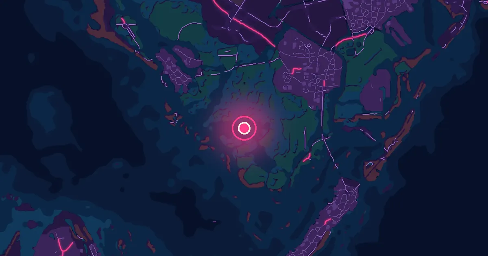

Dónde está Grassrivers en GTA 6

Inspirado en Everglades
Los pantanos y manglares que ocupan el suroeste de Leonida. Ríos, canales y comunidades aisladas, con fauna peligrosa y travesías en barco. Es la región que sustituye el vacío rural de los juegos anteriores por algo que Rockstar promete lleno de cosas por encontrar.